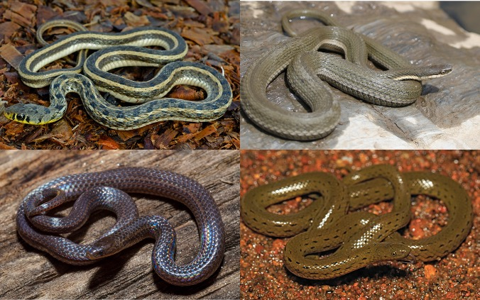
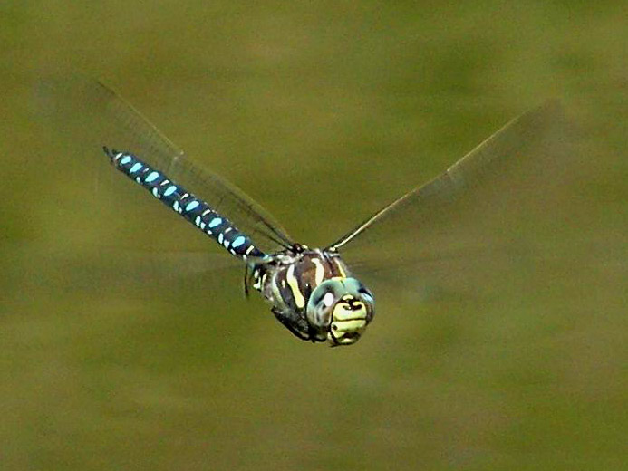

Introduction to Phylogenetic Comparative Methods in R
Welcome to PCMs in R!

In the magical pre-COVID days I was contributing to a short book that would form an introduction to phylogenetic comparative methods (PCMs). These are the online practical exercises that would have accompanied that book. This project was abandoned. These materials also form the bulk of a course I used to run for MSc students here at the Natural History Museum London. Many people have found these materials useful over the years, so it seemed like a good time to finally get them online with a DOI so people can use and cite them.
All practical exercises use R [1], so some knowledge of R is required. I have provided the basics in the first chapter. The online book focuses on practical implementations of methods for the most part. Some theoretical underpinnings can be found in the half completed book here: https://nhcooper123.github.io/pcm-primer/.
I would like to thank the many generations of postdocs and students who have taken courses with me and helped me to hone these materials. And to the many others out there teaching PCMs and writing tutorials that helped me learn these methods in the first place, especially Andy Purvis, Luke Harmon, Brian O’Meara, David Orme, Sam Price, Dan Rabosky, Liam Revell and Graham Slater.
Particular thanks to the authors of the R packages used and cited in this book. None of this would be possible without them. Do not forget to cite the packages you use in your own work. And if you meet one of them in person, buy them a beer/cake/coffee to say thank you!
Best of luck to you all, and happy PCM-ing!
Datasets and trees
All datasets and trees for each exercise are available for download as a ZIP from here. When you click this link it will take you to a website and the download should start automatically.
Don’t forget to unzip this folder before starting.
Boxes
Throughout the book are boxes of text highlighting particularly important issues:
Information boxes. These boxes highlight important details. These boxes may also show you how to solve problems that may not affect every user.
Extra details boxes. These boxes contain detailed explanations of things for those who like to fully understand the complexities of what they are doing, for example technical details of the code that I have not explained in detail in the text.
Caveats boxes. These boxes highlight important points that need to be considered when working through your own analyses. They reveal areas where it is important to be careful and think about what you are doing and why. The image is a Jurassic Park era velociraptor to remind you of the “Jurassic Park caveat”, i.e. that just because you can perform an analysis in R doesn’t mean that you should (thanks to Dr Ian Malcolm and Dr Michael Crichton)! Always consider the question at hand, your study group, and the quality of the data you are using before embarking on a new comparative analysis.
Example datasets
I’ve tried to keep my examples to a minimum so that you have chance to get familiar with the trees and data. As such there are just three main example datasets in this book. In each case I’ve removed a few species and a few variables to make things a bit more straightforward. If you want to use these datasets for your own work you should download the data from the publications listed to get the complete datasets
Apologies in advance to the non-vertebrate, non-animal fans out there. To make up for it I’ve added several plant and invertebrate examples to the practical exercises at the end of each chapter. If it helps just replace the word frog with fly, snake with sponge, and marsupial with grass. It won’t alter the R code.
Frog eye size evolution

Who doesn’t love frogs? Frogs are cool. One of the coolest things about them is that they have weird bulgy eyes…or do they? Some species have teeny tiny eyes, while others have massive eyes. In fact frogs have some of the biggest eyes relative to their body size across all vertebrates. Thomas et al. 2020 [2] predicted that this variation might be due to where they live, their mating habits, the time of day they are active, and their body size. In our examples we’ll test some of these hypotheses using phylogenetic comparative methods.
The data and modified tree for this example come from Thomas et al. 2020 [2], and the original tree comes from Feng et al. 2017 [3]. If you want to see the full results check out Thomas et al. 2020 [2]! And there’s a nice summary of the paper here.
Natricine snake head shape evolution

Snakes are also cool, especially natricines which are the group that contains both the delightful European grass snake (Natrix natrix) and the ubiquitous garter snakes (genus Thamnophis) of North America. Natricine snakes are found across the globe, and have a range of interesting ecologies and more morphological variation than you might expect, especially in their head shape. Deepak et al. 2023 [4] predicted that these variations in head shape would be more closely related to the ecomorph they belonged to (i.e. whether the snake was terrestrial, aquatic, burrowing or aquatic burrowing) than their evolutionary history. They expected that head shape might be an example of convergent evolution. In our examples we’ll test some of these hypotheses using phylogenetic comparative methods.
The data for this example comes from Deepak et al. 2023 [4], and the tree comes from Deepak et al. 2021 [5]. If you want to see the full results check out Deepak et al. 2023 [4]!
Diversification in dragonflies

You’ve probably guessed that yes, dragonflies are also cool. They’re incredible predators and extremely agile fliers. My favourite fact about dragonflies is that one species, the globe skimmer (Pantala flavescens) make an annual multi-generational migration of around 18,000km (!) with individual insects flying more than 6,000km (thanks to Dr Jessica Ware for that fact and this dataset!). Dragonflies today are generally found near water, with some preferring lotic habitats with fast flowing waters and others lentic habitats with slow moving waters. The clade has been around for over 300 million years, and currently has over 3000 species. But how quickly did they diversify? Do different clades have different rates of evolution? Do their habitat preferences influence their diversification rates? In our examples we’ll test some of these questions using phylogenetic comparative methods.
The 522 species tree for this example comes from Letsch et al. 2016a [6] and is available to download from Letsch et al. 2016b [7]. This paper looked across dragonflies to investigate whether species from lotic habitats with fast flowing waters diversify more rapidly than species from lentic habitats with slow moving waters. If you want to see the full results check out Letsch et al. 2016a [6]!
Citing R and R packages
Lots of people work on R and R packages for free. They’re the reason that R is so great! The best way to thank them for this selfless work is to cite R, and any R packages that you use, whenever you write a report, article, thesis chapter or paper. This means that R developers can show their funders, bosses, supervisors and potential employers that people are using their work.
The citation for R will usually look something like this
All analyses used R version 4.5.3 (R Core Team 2026).
Your version number might be different (4.5.3 is the current version at the time of writing this book). You only need to do this once, usually in the methods section. The full citation for the bibliography is usually something like:
R Core Team (2026). R: A language and environment for statistical computing. R Foundation for Statistical Computing, Vienna, Austria. URL https://www.R-project.org/.
If you don’t remember this, or can’t work out what version of R you are using, the R folk have you covered. To get the citation you can use:
## To cite R in publications use:
##
## R Core Team (2026). _R: A Language and Environment for Statistical Computing_. R Foundation for Statistical
## Computing, Vienna, Austria. <https://www.R-project.org/>.
##
## A BibTeX entry for LaTeX users is
##
## @Manual{,
## title = {R: A Language and Environment for Statistical Computing},
## author = {{R Core Team}},
## organization = {R Foundation for Statistical Computing},
## address = {Vienna, Austria},
## year = {2026},
## url = {https://www.R-project.org/},
## }
##
## We have invested a lot of time and effort in creating R, please cite it when using it for data analysis. See
## also 'citation("pkgname")' for citing R packages.To get the version of R you can use:
## [1] "R version 4.5.3 (2026-03-11)"You can also look at more version information by running:
I’ve suppressed the output here as it will be different for every user. The version number is near the bottom of the output. You’ll also see one of the fun things about R here which is that each version has a nickname, all of which are the titles of Peanuts comics! For more info see this slackoverflow discussion.
What about R packages? You should cite these at the relevant points in your methods section. For example, for caper(we’ll return to what this does later in the book) we might write
We fitted phylogenetic generalised least squares (PGLS) models using the R package caper version 1.0.1 (Orme et al. 2018).
To find out what the citation is for an R package we also use the function citation but this time specify the package.
## To cite package 'caper' in publications use:
##
## Orme D, Freckleton R, Thomas G, Petzoldt T, Fritz S, Isaac N, Pearse W (2025). _caper: Comparative Analyses
## of Phylogenetics and Evolution in R_. doi:10.32614/CRAN.package.caper
## <https://doi.org/10.32614/CRAN.package.caper>, R package version 1.0.4,
## <https://CRAN.R-project.org/package=caper>.
##
## A BibTeX entry for LaTeX users is
##
## @Manual{,
## title = {caper: Comparative Analyses of Phylogenetics and Evolution in R},
## author = {David Orme and Rob Freckleton and Gavin Thomas and Thomas Petzoldt and Susanne Fritz and Nick Isaac and Will Pearse},
## year = {2025},
## note = {R package version 1.0.4},
## url = {https://CRAN.R-project.org/package=caper},
## doi = {10.32614/CRAN.package.caper},
## }Usually package citations contain the version number, but if not you can get the version using
## [1] '1.0.4'An additional benefit to citing R packages is that it helps people understand exactly what you did. It’s possible there are multiple ways to run a PGLS model, but if your report says you used caper, it’s easy for a reader to check how caper does it and to know exactly what you did. This helps people reproduce your analysis, and can also help you prove to anyone assessing your work that you know what you are doing!
If you aren’t sure what packages you need to cite, there is a wonderful package called grateful which you can install and use to export an HTML file showing all the packages you currently have loaded and their citations.
This document was created using the packages bookdown [8], [9], knitr [10], [11], [12] and rmarkdown [13], [14], [15].
Citing this guide
If you use the online practical exercises these should be cited as:
Natalie Cooper. 2026. Introduction to Phylogenetic Comparative Methods in R. https://nhcooper123.github.io/pcm-primer-online. DOI: 10.5281/zenodo.19134985.